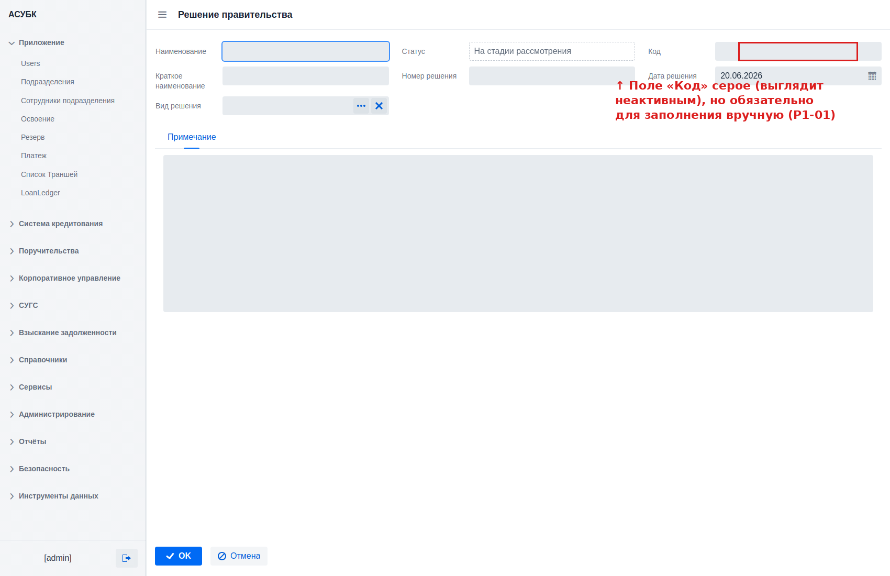

R3. Поле «Код» — системная генерация вместо ручного ввода
Автоматический уникальный код решения по формату {ТИП}-{ГГГГ}-{NNNN}
🔴 Высокий приоритетСвязан: дефекты P1-01, P1-02; R6 (стиль полей)
Документ для согласования · Версия 1.0 · 20.06.2026 · Тестовая среда https://fkftest.okmot.kg/
Содержание
Назначение задачи
Как сейчас (проблема)
Что предлагаем
Правила и поведение
Как это увидит пользователь
Критерии приёмки
Открытые вопросы
1. Назначение задачи
Код решения — это основной идентификатор, по которому на решение
ссылаются downstream-сущности (кредитные программы и далее по жизненному циклу).
Идентификатор обязан быть уникальным, предсказуемым и единообразным.
Сейчас он вводится вручную — это источник ошибок и неоднозначности.
2. Как сейчас (проблема)
Факт (проверено 2026-06-17). Код решения вводится ВРУЧНУЮ: поле
редактируемо и обязательно при создании, без проверки уникальности. При
этом поле отрисовано серым «disabled»-стилем, хотя оно редактируемо
(P1-01) — пользователь не понимает, что его надо заполнять. Кроме того,
есть пустые legacy-записи без кода (P1-02).

Форма создания: поле «Код» выглядит как неактивное, но заполняется вручную и обязательно (P1-01). Проверено 2026-06-20.
3. Что предлагаем
Код решения генерируется системой в момент создания записи. Ручной ввод
убрать; поле сделать read-only (только для чтения). Это заодно снимает
проблему «серого» стиля (P1-01) — read-only-поле и должно выглядеть как
read-only.
4. Правила и поведение
Параметр
Правило
Генерация
Код присваивается системой в момент создания записи; вручную не вводится.
Поле в форме
Read-only (только для чтения), без возможности правки.
Формат
{ТИП}-{ГГГГ}-{NNNN}.
ТИП
Короткий код вида решения: ПОСТ / РАСП / ОСН / РКМКР / РПКР / ПКМКР.
ГГГГ
Год из поля «Дата решения».
NNNN
Сквозной порядковый номер внутри пары (тип+год), с ведущими нулями. Пример: ПОСТ-2026-0007.
Уникальность
Гарантируется счётчиком (тип+год).
Legacy
Старые пустые коды оставляем как есть — предстоит полное обнуление данных, миграция не нужна.
5. Как это увидит пользователь
1Открыть «Создать решение»
Пользователь открывает форму «Создать решение».
2Поле «Код» — read-only
Поле «Код» отображается как read-only
с подсказкой «присваивается автоматически».
3Сохранение → код
После выбора «Вида решения» и «Даты решения»
и сохранения система формирует код, например ПОСТ-2026-0007.
4Код виден везде
Код виден в списке и карточке,
downstream-программы ссылаются на него.
Совет. Единый стиль read-only-полей берётся из R6
(дизайн-система АСУБК).
Как должно выглядеть: «Код» сгенерирован системой (ПОСТ-2026-0008), поле read-only (макет mockups/decision-create.html).
6. Критерии приёмки
Поле «Код» в форме read-only, ручной ввод недоступен.
Код генерируется при создании по формату {ТИП}-{ГГГГ}-{NNNN}.
ТИП соответствует виду решения из справочника.
ГГГГ берётся из «Даты решения».
NNNN — сквозной счётчик по паре тип+год с ведущими нулями.
Коды уникальны.
«Серый» вид поля больше не вводит в заблуждение (read-only выглядит read-only).
7. Открытые вопросы
Полный маппинг «Вид решения» → короткий ТИП (подтвердить справочник).